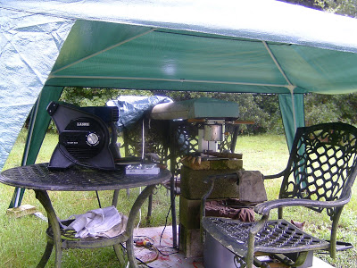
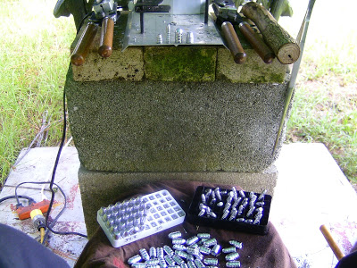
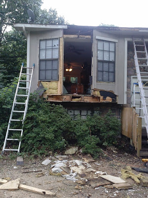

Saturday, August 31, 2013
Of Civil Wars, Apaches and "Social Futurism" -- "Leave us the hell alone!"
A friend suggests that now is a good time to re-post this from four years ago.
 Geronimo in old age.
Geronimo in old age.Some of you I know have already seen this piece by Sara Robinson at alternet.org entitled, "Does the Right Want a Civil War?"
I decided to reply to Ms. Robinson and that reply, sent to her via email, is below. The thing that amazes me is how blithely liberals talk about civil war. It's as if they have no concern for the butcher's bill -- the stench of burning bodies, the sight of dead babies in the ditch, fires in the night. You'd think it was antiseptic. But to invite one just to try to intimidate a political opponent?
Mike
III
Of Civil Wars, Apaches and "Social Futurism."
By Mike Vanderboegh
For the Chiricahua, as for all Apaches, revenge was not primarily a matter of personal spite. It was a means of redressing an imbalance in the state of things. To kill members of the enemy after they had killed one's own was almost a sacred duty -- though a leader such as Nana had no right to order any warrior to fight. The Apache ideal of revenge bears a kinship with the Greek notion of Nemesis. As Kaywaykla put it: "Ussen had not commanded that we love our enemies. Nana did not love his; and he was not content with an eye for an eye, nor a life for a life. For every Apache killed he took many lives." -- David Roberts, Once They Moved Like the Wind: Cochise, Geronimo and the Apache Wars, Simon & Schuster, 1993, p. 192.
My dear Ms. Robinson,
I see from your blog that you, like me, are a student of the Apaches. You proclaim these words from Geronimo to be your "favorite quote": "All the free men are dead or still fighting."
The quote from Geronimo that I best remember are the words he spoke to General Crook when he surrendered to him: "Once I moved about like the wind. Now I surrender to you and that is all."
My "favorite" Apache, if that is the right word, was Juh, their greatest tactical genius. Afflicted with a terrible stutter, and dead long before Geronimo, he is not remembered for eloquent speeches. But his name, Juh, was a corrupt Spanish rendering of the Apache phonetic pronounced "Ho," meaning "he who sees ahead." As Roberts describes his premonitions:
As long ago as 1876 . . . Juh had been seized with a sense of doom. Even as he recruited his warriors, he told them time and again "that he could offer them nothing but hardship and death." He reminded them that "they would be hunted like wild animals by the troops of both the United States and Mexico." On day . . . Juh received a vision. Out of a thin cloud of blue smoke seen across a chasm, thousands of soldiers in blue uniforms marched into an evanescent cave. Juh's warriors saw the vision, too. A medicine man explained it: "Ussen sent the vision to warn us that we will be defeated, and perhaps all killed by the government. Their strength in numbers, with their more powerful weapons, will make us indeed Indeh, the Dead. Eventually they will exterminate us." Yet there was no alternative in Juh's pessimistic soul but to fight on toward that inevitable end. -- Ibid., p. 207.
As you probably recall, Juh married Geronimo's favorite sister, Ishton. Uncharacteristically for an Apache, Juh was over six feet in height and stockily built. A member the Nednhi, southernmost of the Chiricahua sub-groups, Juh's home ground was the high mountains of the Sierra Madre in northern Mexico. Roberts says, "The Nednhi were to remain throughout the Apache wars the most mysterious, the 'wildest' of the Chiricuhuas." (p.62).
On 5 May 1871, Juh demonstrated his tactical brilliance and iron purpose in a carefully targeted and orchestrated ambush of U.S. Cavalry near Bear Springs in the Whetstones -- an action which for almost a hundred years was attributed by historians to Cochise. His target was no shavetail fresh out of West Point, but the best Indian fighter the Army in Arizona had, LT Howard Cushing. Before this day, Cushing had been responsible for killing more Apaches -- mostly Mescaleros and Pinals -- than any other officer. He was brave, determined, resourceful, cool, energetic and already famous beyond his years all over the southwest. He had also sworn to track down and kill Cochise. In any case, he was no match for Juh.
Suckered into an arroyo by following the trail of a lone Apache woman, Cushing's unit was ambushed and the three man advance party cut off. But as the Apache fire was not too severe, Cushing rushed forward to extricate his men. At that moment, as SGT John Mott later recalled, "It seemed as if every rock and bush became an Indian." The Apaches' fire was concentrated on Cushing. First he was wounded, then he was killed:
For a mile, the Apaches kept up a running fight . . . It seemed however that with the death of the lieutenant, the Indians had accomplished their aim. At last they let the rest of the soldiers go. . . Mott's men staggered westward . . . Besides the lieutenant, the patrol lost only two men, with a third severely wounded. But the army's finest Apache fighter had been coaxed into a trap, then slain with selective precision. . .
Cushing had made it his personal vendetta to hound Cochise to his death, and as he crisscrossed Arizona killing apaches, he was convinced he was close to cornering his worthy adversary. At the same time, Juh -- a chief Cushing had never heard of -- had made it his own mission to bring the gallant and cocksure lieutenant to his downfall.
Juh's antipathy had formed when he learned of an army attack on a camp of peaceful Mescaleros in New Mexico, apparently led by Cushing. The soldiers had left everyone dead except two women . . . Enraged by this treacherous attack, Juh developed a personal obsession with Cushing. He sent out scouts who spied on the lieutenant's maneuvers. Three times Juh engaged Cushing's column in indecisive skirmishes -- the very firefights in which the lieutenant thought he was closing in on Cochise. At last Juh lured Cushing into his trap in the Whetstones.
As Juh's son recalled many years later, "Other White Eyes were killed, too; I don't know how many. We weren't all the time counting the dead as the soldiers did. Juh wasn't much interested in the troops -- just Cushing." -- Ibid., pp. 61 - 63
I thought of Juh when I read your essay, "Does the Right Want a Civil War?," the other day. (http://www.alternet.org/blogs/peek/140623)
Now, you may be a "social futurist," but how you intend to see the future clearly when your present knowledge and assumptions are clouded by deliberate conflations, elisions, simplistic analysis, unreasoning prejudice and spectacular lumping of all your perceived "enemies" into one is beyond me.
Take me for example. I am a small "r" republican. I believe in the constitutional republic of the Founders, in individual liberty, free markets, God and the deterrence of tyranny through preparedness. Not in that order. I am proud to say that I have been on the enemies lists of three consecutive White Houses now. I vehemently opposed the PATRIOT Act. I despise Rush Limbaugh, Dubya and Sean Hannity. I have fought -- literally fought at street level -- green-teethed Ku Klux Klan sheetheads, neoNazis and anti-semites all my life. During the Clinton Administration, we in the Constitutional militia movement had to embarrass the FBI into arresting some of the Aryan Republican Army bank robbery gang who were being allowed to walk the streets of Philadelphia free as birds. Just ask Eric Holder, he'll remember. For my pains I was called "anti-government" and blamed for the Oklahoma City bombing, as was Rush Limbaugh, Newt Gingrich and others. Your technique is by no means original.
I despise collectivism in all its forms. And yes, Ms. Robinson, the Bush-hating, 911 Truther, Holocaust-denying anti-semite and Nazi who killed the guard at the Holocaust Museum was a collectivist, just like fascists are collectivists, socialists are collectivists, and communists are socialist collectivists with guns. So for that matter are tribalists, Jihadis and other religious fanatics. The Holocaust Museum shooter isn't one of ours, he's one of yours. He was and is a collectivist.
I know all the the similar collectivist lies, common recruiting and operational techniques because I am an ex-communist myself. That makes me the most virulent anti-communist you can find. Now, I understand why you want to lump us all together. You think that the lie makes our repression more palatable to the public. But here's the deal: you don't, you can't, convince US. And WE are who you need to be worrying about when you invite us to a civil war.
Look, I've spent almost twenty years now first arguing and then shouting across an ever-widening divide between our two respective sides (and remember ALL the collectivists are on your side, as I see it). I am tired, I am hoarse and frankly, I'm convinced that we have come to the point where it cannot possibly help.
When educated journalist lawyers like Bonnie Erbe call for "rounding up all the haters" simply for expressing their opinions and when supposedly bright "social futurists" like you try to still diverse voices by lumping us all together with neoNazi terrorists and inviting us to civil war, I'm simply more convinced that further discourse, beyond one critical topic, is now futile. As Jayme Evans wrote in the Canada Free Press yesterday, we have come to the point where "one man’s Constitution is another man’s toilet paper."
We are, we must admit, two peoples sharing a common language, the same national border and not much else. You are seeing through a glass darkly when you perceive looming civil war. This much I will credit you. But you are foolish to demand that we put up or shut up, for I assure you, we WILL put up if forced to it. And, thus for the sake of preventing the civil war whose prospect you so irresponsibly invoke, it is THIS critical topic which must still be discussed.
First, you may not have noticed, but you must deal with this fact, among others:
June 15, 2009
“Conservatives” Are Single-Largest Ideological Group
by Lydia Saad
PRINCETON, NJ -- Thus far in 2009, 40% of Americans interviewed in national Gallup Poll surveys describe their political views as conservative, 35% as moderate, and 21% as liberal. This represents a slight increase for conservatism in the U.S. since 2008, returning it to a level last seen in 2004. The 21% calling themselves liberal is in line with findings throughout this decade, but is up from the 1990s.
These annual figures are based on multiple national Gallup surveys conducted each year, in some cases encompassing more than 40,000 interviews. The 2009 data are based on 10 separate surveys conducted from January through May. Thus, the margins of error around each year's figures are quite small, and changes of only two percentage points are statistically significant.
To measure political ideology, Gallup asks Americans to say whether their political views are very conservative, conservative, moderate, liberal, or very liberal. As has been the case each year since 1992, very few Americans define themselves at the extremes of the political spectrum. Just 9% call themselves "very conservative" and 5% "very liberal." The vast majority of self-described liberals and conservatives identify with the unmodified form of their chosen label.
http://www.gallup.com/poll/120857/Conservatives-Single-Largest-Ideological-Group.aspx
OK, get that? We outnumber you two to one, and our numbers are increasing. From your perspective, this is worse than the Revolution -- the FIRST American Civil War. Back then, a third of the population agreed with the Founders, a third sided with the King and a third blew with the wind and took what came. The revolutionary combatants in the field amounted to only three percent of the population, actively supported by perhaps ten percent more.
Second, we are the ones with the firearms. There are something on the order of 250 million firearms in this country, and as Clausewitz stated, "In military affairs, quantity has a quality all its own."
The American armed citizen's rifle is the bone in the throat to any potential tyrant. And not to put too fine a point on it, but what you're selling is collectivist tyranny from our point of view. You disagree, of course, I understand that. But if what you are tempting is civil war, Ms. Robinson, you'd better bloody well try to understand our point of view for a moment.
WE are not trying to make YOU do anything. WE do not want your property, as you covet ours. WE don't want to tax you or put your children into indentured servitude. WE are not trying to tell you how to think or what to believe. Heck, as much as I despise the racists in this country I understand that they still have the right to speak their pus-filled beliefs whether I like them or not. The same goes for your opinions, or Bonnie Erbe's. This evidently makes me more enlightened than Bonnie Erbe or you. Oh, well, I have long known that if you scratch a liberal, you'll get a fascist.
But, no, we don't want you to be anything you don't want to be. I wish I could say the reverse was true. If it were, we'd be one country instead of two.
But here's our creed, and if you insist, our battle cry:
LEAVE US THE HELL ALONE!
We are done being shoved back from the free exercise of our God-given, inalienable rights. It is you, not us, who are pushing, shoving, tempting, even demanding that this country descend into its third civil war. But it is we who are more ready to prosecute that war than you.
This is true not only because we outnumber you.
This is true not only because we are armed to the teeth and know how to use those arms.
This is true because our side doesn't think of the noble surrender that was Geronimo's, but rather of the deadly efficiency of Juh's strategy and tactics. In military affairs, Juh was Geronimo's superior in every way.
So here it is.
Start a civil war, and we will win it. It's that simple.
That may not agree with what you see in your "social futurist's" crystal ball, but it is nonetheless true. Be careful what you solicit, Ms. Robinson.
You might get it.
Mike Vanderboegh
PO Box 926
Pinson, AL 35126
sipseystreetirregulars.blogspot.com
NFATCA Follies. All that groveling and snitching and they got exactly dick to show for it. They can't blame this one on Ramsey A. Bear.
Readers may recall my post from nearly three years ago, "The True Story of the Life of "R.A. Bear": Inception & impregnation into the minds of the ATF via a highly placed snitch named Dan Shea of the NFATCA," detailing one aspect of the machinations attendant to the symbiotic relationship between Dan Shea and John Brown and the federal gun cops.
Now we have this important post from David Codrea detailing another result of all that groveling and snitching: "NFA firearms collectors group initiated ATF gun trust rule change."
While this column expressed concerns for the new requirements, commentators weighed in emphasizing the benefits of doing away with the CLEO signature requirement, as the current state of affairs allows a police chief or sheriff to ignore the application, thus halting the firearms transfer. The change was thus represented by some as a tradeoff worth making.“Unfortunately, we just obtained a copy of the 62-page proposal and the above statement is a false depiction of the actual proposal, as everyone was made to believe that the CLEO signature requirement would be eliminated in exchange for additional regulations on fictitious entities,” Prince explained. “ATF will NOT be eliminating the CLEO requirement and instead IMPOSING it on ALL entities.”
David concludes:
What’s apparent from these new revelations is that additional public scrutiny is required, including scrutiny of backroom deals being arranged without fanfare by special interest groups who petition for changes to regulations that will reach beyond their membership of collectors and investors. What is unknown at this time is what changes the White House will insist on before a final draft is presented for public comment. That period has not yet begun, but when it does, as today’s revelations should make clear, it will be in the interests of all gun owners to become informed and engaged.
Be sure and go to the link and pass it along. I'll have more on this later, including an interview with sources close to Ramsey A. Bear. ;-)
Friday, August 30, 2013
Grandpa's Corollary to the Peter Principle. Anti-firearm zealot Andrew Traver, locked out of his dream job at ATF, gets picked by the Navy to head NCIS.
I once tried to explain to my grandfather about the Peter Principle, which states that in a hierarchy people rise to their level of incompetence, where they then stay forever. He looked at me and said, "You mean shit floats to the top. Hell, I knew that." Here is proof positive of Grandpa's corollary to the Peter Principle: Navy chief picks former ATF nominee to head NCIS
Democrats have a party rally on steps of Lincoln Memorial and pretend it's a commemoration.
I wondered when someone was going to notice the media flushing Charlton Heston down the March on Washington memory hole. Not surprisingly, ABC reports, "Republican Party officials reached out to organizers of this week’s March on Washington commemoration with a series of suggestions for possible GOP speakers, but several of the people they recommended were never contacted with invitations to speak, according to Republican National Committee officials." Collectivists -- so predictable.
Gun control lickspittle spins B. Toad Jones' swearing in as Illegal Mayors Against Guns has some suggestions for him.
Long-time readers will recall Dan Freedman as the anti-firearm yellow journalist hack who ignored the Fast & Furious story. Now we have this faux journalist's take on B. Toad Jones' accession to power at ATF.
Here is the Toad's speech and here are the suggestions that Bloomberg's Illegal Mayors Against Guns has for him.
The Toad thanked, among others, the anti-firearm advocacy groups who got him his job:
Let me also thank all of the organizations, associations and stakeholders who have supported and worked with ATF during my time as acting, particularly the local and national law enforcement groups and those in the firearms and explosives industry. I believe our relationships are strong. And going forward, as we work with the industries we regulate, the law enforcement organizations we partner with, and public and private groups that support our mission, I look forward to finding solutions where we all get what we need – while always respecting and protecting our Constitutional rights.
Riiiight. The failure of the GOP to carry through on the Gunwalker investigation and their lying false promises to have general oversight hearings on the ATF makes that unlikely. Indeed, their impotence -- bought at the price of FBI blackmail -- has only emboldened the ATF anti-firearm zealots. The Toad is feeling froggy and it only remains to be seen how far he will jump, not in what direction.
Martin Luther King and the "Street Sweeper Speech."
Kudos to Erick Erickson for remembering MLK's “The Three Dimensions of a Complete Life”
Thursday, August 29, 2013
Pretty funny move on the part of the Kerodin Kleptocrat Komedy Kabal. Unconsciously and unintentionally so or a hat tip to the Fibbies?
Readers may recall my previous stories on the FBI operation known as PATCON, short for "Patriot Conspiracy." If not, you may go here and here to get up to speed. PATCON was a very deadly conspiracy in its own right by the FBI against the Constitution of the United States, using useful idiots in the so-called "Patriot" community. They are still desperate to cover up the links between PATCON and the Oklahoma City Bombing.
So imagine my amusement when I learned that Kerodin and Kompany are hosting a gathering they call "PatCon" on that God-forsaken piece of undeveloped scrub in Idaho they call "The Citadel." See "Event planned for Citadel."
So are these people -- who attempted to steal an idea, hijack a movement and trademark the Roman numeral III* (see below) -- being ignorantly, unconsciously and unintentionally funny or is this a hat tip to the constitutional criminals of the FBI?* (I'm not kidding. They send threatening letters to anyone who uses the Roman numeral III on products, claiming it to be a "violation of trademark." Seems to me that they might as well threaten to sue the Roman Republic. It was yours truly, after all, that THEY stole the idea from in the first place. Heck, I was using the concept of the Three Percent when Kerodin was still in federal prison for extortion and firearms charges. But you've got to give them credit, they're nothing if not breathtakingly unrepentant bullies, even if they are absolutely ignorant of the history of the movement they claim to represent.)
The Toad Gets His Hopping Orders: Collectivist Regime Attacks the Civilian Marksmanship Program (among other things).
Obama offers new gun-control steps.
One new policy will end a government practice that lets military weapons, sold or donated by the U.S. to allies, be reimported into the U.S. by private entities, where some may end up on the streets. The White House said the U.S. has approved 250,000 of those guns to be reimported since 2005; under the new policy, only museums and a few other entities like the government will be eligible to reimport military-grade firearms. . .The event in the Roosevelt Room will also mark the ceremonial swearing-in for Todd Jones, whose confirmation to head the Bureau of Alcohol, Tobacco, Firearms and Explosives after six years of political wrangling to fill that position was another of Obama’s post-Newtown priorities. A Senate deal to approve the president’s pending nominations after Democrats threatened to change Senate rules cleared the way for Jones’ confirmation last month.
Tap dancing in the minefield of unintended consequences. 4GW for thee but not for me? Wall Street Journal columnist embraces 4th Generation Warfare as applied to Syria.
"Be careful what you wish for. You may get it." -- An ancient Chinese proverb.
As CNBC calculates the costs of Syrian intervention and Foreign Policy assures us that "Intercepted Calls Prove Syrian Army Used Nerve Gas, U.S. Spies Say," Politico has 5 questions for Barack Obama on Syria, among them, "What’s with all these leaks?"
Iran is threatening to rain down destruction on Israel and Israel is dusting off the civilian gas masks once again. This has all the makings of a regional, if not global, war.
But Bret Stephens of the Wall Street Journal has stumbled into the minefield of unintended consequences and embraced 4th Generation Warfare targeting in an article entitled, "Target Assad. A strike directed straight at the Syrian dictator and his family is the only military option that could hasten the end of the civil war."
Should President Obama decide to order a military strike against Syria, his main order of business must be to kill Bashar Assad. Also, Bashar's brother and principal henchman, Maher. Also, everyone else in the Assad family with a claim on political power. Also, all of the political symbols of the Assad family's power, including all of their official or unofficial residences. The use of chemical weapons against one's own citizens plumbs depths of barbarity matched in recent history only by Saddam Hussein. A civilized world cannot tolerate it. It must demonstrate that the penalty for it will be acutely personal and inescapably fatal.Maybe this strikes some readers as bloody-minded. But I don't see how a president who ran for his second term boasting about how he "got" Osama bin Laden—one bullet to the head and another to the heart—has any grounds to quarrel with the concept.
I like that last line about Obama not having any grounds to quarrel with the concept. But Stephens, Lord love him, has not thought this through. For what is good for goose is surely good for the gander. Obama, by embracing the targeting of enemy war-makers and decision-takers as exemplified by Fourth Generation Warfare, is aiming a precision guided weapon at his own head. This fact cannot be lost upon the Syrians or the Iranians or any of their sleeper cell familiars currently in this country. Indeed, in the modern era politicians have been reluctant to kill their counterparts for fear that, in the words of Malcolm Reynolds, "Someone ever tries to kill you, you try to kill 'em right back!" This is a relatively unexplored country for American presidents, save for Bill Clinton's unheralded changing of the rules of engagement in 1999 vis-a-vis the recalcitrant Serbs. And of course Milosevic did not try to return the favor for powerful political constraints of his own.
That will not be the case for the Assad regime or, I dare say, the Iranians. Not to put too fine a point on it, but those rules are equally applicable to any would-be tyrant anywhere and it doesn't require cruise missiles, satellites and drones to carry them out. ANY would-be tyrant. ANYWHERE. At ANY time. Including this country in the 21st Century.
Obama, by embracing and extending Clinton's rules of engagement with the Serbians to the war-making and decision-taking elites of his enemies whoever he perceives them to be, will be pointing a gun at his own head, and at those of all the collectivist myrmidons in his administration. If not now, then in the future.
In the context of American liberty -- and conjecturing hypothetically -- I am on record as opposing the assassination of an American president no matter how tyrannical, preferring to save such a person for the war crimes trials that will follow. The same does not extend to the upper echelons of war-makers and decision-takers of such a hypothetical oppressive regime. The Iranians and Syrians, however, being collectivists themselves of their own ilk, will not have my moral or political scruples about killing an American president.
To flash, or not to flash, that is the question.
Officer Is Indicted on Charges of Lying About Photographer’s Arrest.
Of course the officer is only in this self-made spot because he jumped a NEW YORK TIMES reporter. If it had been a mere citizen, he could have beat the crap out them with impunity.
Praxis: 'This is not your rifle.' Marines take foreign weapons instructor course
This article was forwarded to me with the comment:
The Marines are now making a a real effort to familiarize line troops with non-standard weapons that might be encountered in the field. I feel strongly that this is good advice for everyone. The next time you go shooting with someone who runs a platform you're not familiar with, ask him to let you swap for some trigger time.Even better, after you're finished shooting, ask them show you how to field-strip it, clean it, and do an operational check.Offer to really clean it FOR THEM if they'll simply show you how to break it down.Who knows ? You BOTH might learn something useful.
"A government of wolves."

BFP Book Review- ‘A Government of Wolves: The Emerging American Police State’ by John W. Whitehead.
Fear, and its perpetuation by the government, is the greatest weapon against freedom, and propaganda is the most effective tool for keeping the populace in check. Propaganda, an expertise of politicians, is in reality a fiction. But it is an effective fiction. And in an age of amusements and entertainment, the so-called masses of Americans, who often take what television’s talking heads say as the gospel truth, have difficulty distinguishing between fiction and reality.
"Police Militarization And The Challenge For The Courts."
This was forwarded to me with the comment: "Just disgusting. It's amazing the degree to which police see the danger they're causing and simply don't give a shit. It truly pisses me off."
He's not the only one.
The limits of amateurism and the sublime but criminal incompetence of inertial "health care" medical bureaucracy.

When asked how to pronounce Joe Btfsplk's last name, cartoonist Al Capp demonstrated this sound by closing his lips, leaving his tongue sticking out, and then blowing out air, which is colloquially called a 'raspberry' or Bronx cheer. "How else would you pronounce it?"
The A/C huffed it again yesterday. Like before, the outside unit just doesn't kick on. Experts on way today. The contractors to finish the inner work on the bay window also didn't show yesterday, but are going to be here today. We can all swelter together. In the meantime, I've been trying to get an appointment with the company that provided my first pair of diabetic shoes for a replacement pair for over a week as the old ones are disintegrating faster than the gorilla glue can hold them together. But before I could even get an appointment, I had to provide signed statements of my willingness for them to check my medical records as well as a prescription. That was easy, as the wound doctor was happy to provide one. Rx in hand, I drove straight from the doc's to the Biotech Limb and Brace Company and did my part. And waited, and waited. Checking every day, I was told by the Biotech people said they were waiting on the insurance-required medical records to be forwarded by my wound doc and my primary care physician. So, every day, or twice a day, I would follow up with the doctors' offices asking them to get the documents to Biotech. The wound doc's office was right on top of it, but the primary doc's bureaucracy just couldn't be motivated. Finally yesterday, sweltering with the A/C out anyway and frustrated at the non-appearance of the contractors, I blew up. When told by the primary doc's records people that they were waiting (as they had been for a week) for a specially-designated contractor to come copy my medical records before they could forward them to Biotech, I said: "Look, do you mean to tell me that the simple copying of records -- the custody and maintenance of which is YOUR ENTIRE JOB THAT YOU ARE PAID TO DO BY DR. (REDACTED) -- is so beyond your own competence that you cannot do it without the hiring of an outside contractor?!?!? Do you perhaps need instruction in the operation of xerox machines? Can you not hit the print button on a computer screen? Are you really admitting to me that not only are you are that stupid, but that Dr. (Redacted) is PAYING you to be that stupid? I'll tell you what, how about I come down there, find Dr. (Redacted)and ask him directly why it is that he is paying you to get nothing accomplished to the detriment of his own patients?"
Or words to that effect.
The answer? When I call Biotech to find out if that was enough to motivate the forwarding of the required documents, I am told that I have indeed motivated the primary doc's bureaucracy, but only to the extent that it has been agreed that they (Biotech) cannot give me an appointment because I have not been seen by my primary doc in his office (although he has visited me, and billed me, for visits when I was in the hospital) for more than six months, hence this is proof that he is not responsible for my diabetic treatment. She asked, Who is responsible for my diabetic treatment?
I did not curse. I am proud of that. In the long and detailed denunciation of medical bureaucracy that followed, I did not curse. Long story short (too late), I decided that the wound care doc was now "responsible for my diabetic treatment," and they gave the required written assurances to Biotech. I have an appointment for Friday morning. It would have been today, but I have to be home (sweltering) for the various contractors to do their professional best.
Joe, is that you hiding in the bushes?
Wednesday, August 28, 2013
Yesterday about did me in.
I overslept and now am caught in the morning take-Rosey-to-work requirement. The repair crew is also going to be here today to finish the inside of the bay window, so there's that, too. I'll have more later. Sorry.
Killer Tomato Cass Sunstein sez . . .
"People Don’t Fear Climate Change Enough." They ought to fear him and his tyrannical collectivist ilk, though.
How old fashioned.
33 lawmakers: Congress must approve Syria action. the fact that it's only 33 out of 535 tells you all you need to know. My attitude was expressed in line yesterday at Lowes while I was getting the stuff to fix my A/C. The subject came up in conversation between two customers behind me, neither of whom thought this could end well. I turned and said, "Well, as the father of a soldier who did three tours of Iraq and one in Afghanistan -- and two daughters of military age -- I think that if backing our existential enemies the Jihadis in Syria is what Obama wants to do, let him send HIS daughters this time. Hell, they've got child soldiers in Africa, don't they? Let them fight and leave the rest of us alone. Let's see how he feels when HE'S got skin in the game." One of the customers said, "Damn right!" and the rest nodded their heads.
Tuesday, August 27, 2013
Fixed it myself.
Cleaned the coils of inside and outside units. Outside was easy. Inside was a pain in the ass (and, my skin being tissue-thin these days, I cut up my hands and arms something fierce on the sharp metal edges). But, I'm only out thirty bucks or so for the coil cleaner, brushes and a light to illuminate the work area inside the inner unit. Not bad. Maybe God's trying to tell me to be self-reliant.
Yes we even have nanny state bastards in Alabama. "New law requires Ala. hunters to report turkey, deer kills."
Regular reader Scott forwards this with the comment:
I have a real problem with this and I haven't been hunting since the late 90's.So, if you own or lease private land this is in essence saying it's not your game on that land. It's the government's.Of course this is the natural next step from a right being converted into a privilege by the citizens conceding the government the right to license it.
Unbelievable.
Still no boils, but this is getting to be ridiculous. My home A/C huffed it during the night. God's trying to tell me something, I suspect. I think I'll hire these guys to serenade the repairman.
Holder pressed on U.S. drug agency use of hidden data evidence
By Democrats, no less. All he has to do to get them off his back is admit he's using the Digital Stasi against us.
Monday, August 26, 2013
Wait. . . weren't the hobbits the good guys who defeated the ultimate evil Sauron?
Ex-U.S. attorney rages against 'a--hole' journalist.
“You are a nasty, little, cowardly spud,” shouted Letten. “All of you, you’re hobbits. You are less than I can ever tell you. You are scum. Do you understand?”
I guess that puts this ex-fed on the side of Sauron the ultimate evil one.
Killer Tomato Sunstein to oversee NSA. Yup, that'll work out well for the Digital Stasi. He's one of their own.
I've written several times before about the Killer Tomato Cass Sunstein, from my original post in April 2009 to this post in 2012 and this one from earlier this year.
Now Tyler Durden fills us in on the latest job of this Killer Tomato: "Obama Picks Cass Sunstein (America’s Goebbels?) To Serve On NSA Oversight Panel." He quotes the Washington Post:
The Obama administration is reportedly proposing Cass Sunstein as a member of a panel to review the surveillance practices of the National Security Agency (NSA), among other former White House and intelligence staffers. Sunstein was the head of the White House’s Office of Information and Regulatory Affairs until last year, when he returned to teaching at Harvard Law School.While at Harvard in 2008, Sunstein co-authored a working paper that suggests government agents or their allies “cognitively infiltrate” conspiracy theorist groups by joining ”chat rooms, online social networks or even real-space groups” and influencing the conversation.The paper also suggests that the government “formally hire credible private parties to engage in counterspeech.” That sounds an awful lot like the 50 Cent Party of online commentators who are paid per comment by the Chinese communist party to sway public opinion.
Oh, yeah, he'll be a great one to oversee the Digital Stasi. After all, he's one of their own.
"Job from Pinson?" Is it me, my ex-wife's voodoo doll, the ghost of Bertolt Brecht or Joe Btfsplk?
"He who laughs has not yet been told the terrible news." -- Bertolt Brecht.

After the adventure of the disintegrating MRI machine and the financial disaster that was the leaky front bay window, a friend called me up and informed me that henceforth he would refer to me as "Job from Pinson." I retorted that I certainly wasn't Job since I still had my family and in any case I hadn't broken out in boils. He was quiet for a moment and then said, "Yet." We both laughed.
Right about then, the ghost of Bertolt Brecht showed up.
See, I had been waiting for the right estate sale to pick up a new (albeit used) clothes washer on the cheap, since ours huffed some time back. Spotted one in the Birmingham News last Wednesday and waited until Saturday for the sale, when I showed up bright and early. The washer-dryer pair was $250, but if it was still there at 1PM, everything was going to be marked down to half price. $125.00. Not bad since the washer seemed to be in very good shape. The dryer was less so, but our dryer was more toward worn out than it, so I thought, hey, more than I wanted to spend but since some subscriptions came in I could make it, if they were still there come the afternoon.
They were. I was now the proud owner of one used washer-dryer combination with no way to get it back to Pinson in Rosey's Camry. But I could still pick them up the following day, if I could promote a friend with a pickup truck to help me. So I called my buddy Eric end together we traveled back down south of town the next day to pick up my plunder. Everything went slicker than snot on a door knob. (This should have been my first clue.)
We return to the manse, haul the old machine out of the basement, up the steps, removing doors along the way to make it happen -- a real ball-buster for both of us. The new machine is installed (again without trouble) and everything is right with the world. The "new" dryer ended up at Eric's for theirs had huffed it a month ago and I was more than happy to recompense them for the help. I turn on the washer, to test it. Everything seems nominal. Back we go to Eric's to drop off the dryer, leaving the washer running.
Now, in my opinion what happened next can be ascribed to one of three possible causes.
1. The ghost of Bertolt Brecht was playing a little game on the guy who likes to quote him so much.
2. My ex-wife conspired with the North Koreans to achieve strategic weapon status for her voodoo doll (which previously seemed to have a discrete tactical range only within the borders of the state of Ohio).
3. Joe Btfsplk was hiding in the bushes across the road.
Joe Btfsplk, older readers may recall, was a little guy in the comic strip Lil' Abner who walked around with a cloud over his head and wherever he went terrible things happened.
My evidence? When I return from Eric's, there is a cascade of water covering my driveway and out into the street, issuing forth from under both garage doors. Oh, merde, I said, or words to that effect. I raced in, got the water department shut-off tool I keep around for just such disasters, and shut the water off to the entire house out at the street. (My oldest daughter was upstairs, but of course she failed to notice the sound of Niagara Falls downstairs, loud though it was.)
You see, unskilled at plumbing as I am, I had -- some years back -- cobbled together a fix for a burst cold water pipe with PVC couplings. My improvisation waited for the moment Eric and I pulled out of the driveway and were out of sight to give up the ghost. The aftermath, while full of sturm und drang, is at this point rather boring. Suffice to say that Eric, a maintenance man in real life when he's not pulling my burnt biscuits out of the oven, fixed the connection with a real copper fitting and the washer is currently running full-tilt-boogie to process the accumulation of dirty clothes -- as are the fans trying to dry out the basement.
So, was it me, my ex-wife's voodoo doll, the ghost of Bertolt Brecht or Joe Btfsplk? All I can tell you is, I haven't come up with boils yet. You just gotta laugh.
Sunday, August 25, 2013

Saturday, August 24, 2013
Rosey and me.

Remember that gaping hole in the front of my house?

Well, they finished the exterior yesterday. We still have some finishing to do inside, but that's nothing compared to the exterior. Now all I have to do is pay off the folks I borrowed from to get the job done. (We started out with a $1,400 quote the week of my C-T scan disaster. After tearing it all out last Sunday morning, it was worse, far worse. $3,500 total including new gutters on the front.) God bless all of you who have sent generous subscriptions to help out. And God bless the friends who fronted me the money to get it done.


"Fundraiser to be held tomorrow for oath-keeping Florida sheriff" and a response to a criticism of Oath Keepers.
"A coalition of citizens and liberty-minded peace officers will gather tomorrow in Panama City, Fla., to raise money in support of Liberty County Sheriff Nick Finch, removed from office by Gov. Rick Scott, and now under investigation by the state for alleged destruction of documents in a case where he dismissed charges against a man arrested with a gun in a traffic stop. . ."
Although Finch has never been a member, both CPSOA and Oath Keepers, the national association of active duty and retired military, police, and first responders, are coming to the defense of a kindred spirit, and Oath Keepers founder Stewart Rhodes will be joining Sheriff Mack and other speakers at tomorrow’s fundraiser.The event will be held between 10 a.m. and 4 p.m. at the Palms Conference Center, 9201 Front Beach Road, Panama City Beach, Fla. Those who can attend are urged to, as well as to spread the word, and those who cannot are urged to donate to the Finch defense fund via the “Donate” button on the CPSOA site.
This post of David's, linked here at War On Guns, prompted this reaction from "militialaw":
I donated but must point out Sheriff Finch is not an Rhodes "Oath Keeper"...which might explain why he actually did something.I stand behind my frequent criticism of Oath Keepers as a bunch of do-nothing talkers that wouldn't stand up to tyranny if tyranny sat down.They have the weapons, training, and potential to end the present police state, but instead, to a man, they choose to collect their $ and enforce laws that plainly contradict the Constitution.Rhodes should be embarrassed to show his face tomorrow.
Which in turn prompted this rejoinder from David:
militialaw, thank you for showing leadership in this. As for your critique, I know Stewart, he is a close personal friend and I can tell you from personal interactions that the general public has no idea the passion and integrity of the man and the personal sacrifices he has made and continues to make. It's late and I don't have time tonight to go into a detailed exposition of the value of the groundwork he and his team have laid and the potential it can reap when the S truly does HTF. For now, my trust, and I do not give it casually or without cause, is that the phase we are now in makes the timely educating of a critical mass, particularly in the military, but also in the LEO community, the invaluable priority, and this is borne out in part by the reaction of the PTB discourage to the education message OK brings (I came across a military training PDF that takes its cues from SPLC that I believe is directly aimed at squelching such influence under the allegation of extremism--can't find the link at the moment)If you are looking for overt examples, not all of the interpositions that have been made on an individual basis are--or can be--known at this time, and may never be known--to do so would remove valuable allies from being able to do so and to influence their peers. Also bear in mind that not all forces and units have OKs, and individual members are probably not on scene to alter most of the outrages we hear about.I wold ask anyone critical or impatient to see more concrete examples to look at what we see with Finch, to see how the establishment will demonize and hang such people, and then to ask themselves exactly what it is that they have done overtly and risked, to note how mounting a defense depends on obscure bloggers like me begging people who, by and large, don't even share links or send emails, let alone contribute, as you have done. And ditto for "complainers" and whistleblowers, as anyone who has followed F&F and other govt. obscenities can see for themselves. Getting canned and/or prosecuted will do no one any good, and sometimes, embedded resources just need to keep their heads down as a matter of living to fight another day.I guess I'll need to find time to address this soon, but I also guess if this does not give you pause, I don't really have much more to throw at it except my personal belief, which if you know anything about me and my work, you'd know does not come from a place of blind faith.
I second David's appreciation of Oath Keepers and Stewart Rhodes. There are hundreds of examples I could cite from the past few years, but let me just point out a few from my most recent collaboration with Stewart during the trip to Massachusetts, Connecticut and New York in April. First, I couldn't have made the trip on my own resources and given my health status at the time without Stewart's help and support. Thus, I wouldn't have been able to give those speeches in Massachusetts and Connecticut, so I wouldn't have been able to kick off the smuggling campaign.
In addition, I came to meet with Oathkeepers in those states (and from others in New England) and got a whole new appreciation for the OK campaigns and the inroads they are making in places you'd never expect.
Finally, our domestic enemies of the Constitution have made Rhodes and OK their particular targets, from Bill Clinton's denunciation of both Oath Keepers and the Three Percenters in the same breath back in April 2010 to SPLC to the FBI and Army CID. If that isn't an indication that they're doing something right, I don't know what is.
Friday, August 23, 2013
Collectivists' false flag of "hate crime." More "Justice for Trayvon" by doing violence to the truth.
Pimping race war by the equivalent of attacking a Polish radio station. How Oberlin Manufactured the Hate-Crime Hoax of the Year
Meanwhile, Hollywood is being its usual helpful self by ginning up real race war with fiction.
'Paula Deen SHOOTS Trayvon Martin' in new SVU that wraps both scandals into one controversial episode.
LATER: But as Pat Buchanan comments on "Dead souls of a cultural revolution," 'Interracial violence is overwhelmingly black-on-white'
Thursday, August 22, 2013
Need .44 Special cases to load for a friend.
Willing to trade decapped and tumbled .40 S&W or .223/5.56 on a three for one basis, or .270 on a two for one. Drop me an email at GeorgeMason1776ATaolDOTcom.
Hoover Tactical Firearms revisited.
It's been over a year since I posted unfavorably on my experience with Hoover Tactical Firearms. I subtitled it "My chance encounter with random acts of unnecessary nanny state ass-kissery," for I was upset at being required to show my ID for a simple ammo purchase.
Things have changed since then. I received this comment to the original story just this week:
Hoover Tactical now has only two owners. We try to provide appropriate service. When you are not happy we want to know about it. You can contact us at 205-822-3600 using our new phone system press the appropriate number to get to management then leave a message. We will call you back. As for pricing, we feel that we are quite competitive. I guess we should start showing the MSRP then our price. Even with Simmons we tend to be within 10-15.00. Is it worth driving from our store to Bessemer and back worth that small amount? (Unless you already have to go that way) We have a large facility. The largest indoor range in Alabama with the only 50 yard indoor rifle range. It was a healthy investment so we need to price low enough to bring customers - but you cannot give away the store with this type of investment. People that shoot at outdoor ranges have many opportunities to shoot different ways. But then again it does not cost much to create berms. We truly believe we have one of the finest facilities in the country.You should try out our Prism Simulator. It is a "live fire" video scenario simulator that provides real life scenarios for you to react to.I hope this has provided the necessary information from this opportunity. For any other questions please call or come by. . .By the way. The ID requirement used by the previous management has been gone and our store now permits open carry as long as you leave you firearm holstered.
So, yesterday I dropped in to chat with Austin Cook, General Manager of HTF. He gave me a short tour and was able to dispel and/or explain some of the rumors I had heard from other shooters. For example, I had been told that "If you use use the range there, you have to use their ammo." Not true if you bring your own firearm to shoot, says Austin, but they do require that use their ammo on RENTED firearms. They have a number of weapons, including Class III, available for rent. HTF's management prefers that you not come in to shoot their firearms and then run steel-case Russian or reloads through them. This seemed more than reasonable to me.
Another thing I'd heard in the form of a complaint was "If you're using their range, even if you're using your own ammo, if it hits the floor, it's theirs." This is true, says Austin, but the rule was put in place for safety reasons as much as anything, with incidents of kids scrounging brass, getting into other folks' lanes, etc.
Anyway, in the interests of truth and fair reporting, I thought I'd give y'all this update on HTF. Now that the management hierarchy has changed, Austin and the folks at Hoover Tactical Firearms hope you'll come in and give them another look.
Tell me again, just who are the terrorists and who signs their checks?
This Homeland Security Employee Is Preparing for a Coming Race War. (And if this guy wasn't anti-gay, SPLC would never have noticed him.)
Wednesday, August 21, 2013

ATF still (always) trolling for idiots.
Be sober, be vigilant; because your adversary the devil, as a roaring lion, walketh about, seeking whom he may devour. -- 1 Peter 5:8
Is this a snitch trying to impress his handler or just another ATF undercover trying to impress his boss? Does it matter?
Tuesday, August 20, 2013
Another country heard from. The collective borg versus individual liberty. We really have nothing in common with these people.
Tell it to the Deacons for Defense and Justice, you stupid collectivist cow. MSNBC’s Reid: Opposition to Gun Control is ‘Neo-Confederate’
Praxis: 1911 versus Glock (Uh oh, here we go again.)
"The Real Truth About 1911s."
For the record, I'm a 1911 man. I have always been a 1911 man and have willed my customized 1911 Norinco clone "Shanghai Surprise" (I use 8 round magazines) to my son. It has never given me a stutter. I distrust and, yes, dislike Glocks. Sorry, that's the way it is.
Praxis: One Man's Solution to Bullet Casting Ventilation.
We will be having another melt party over Labor Day to smelt down 200 pounds or so of range scrap bullets into usable ingot for casting. We work outdoors on a nice day but of course that can be interrupted by rain, Thus I was interested to receive this from reader Chuck.
Evening Mike,I did a bit of casting today and thought you might be interested in how I beat the weather. I have been casting in the past and had thunderstorms sneak up on me. That'll make you think twice about setting up the pot without a roof over it. I'm also a big fan of fresh air while I'm casting, so I have built a ventilation system that has been very helpful.
In the rain today I had to weatherproof one fan with a tarp, but that was no trouble. Never smelled a whiff of smoke while fluxing, and didn't notice the heat of the pot at all, even though it was in the mid 80's here. I will be building an aluminum sprue catcher, (probably bend up an old license plate) so I can cut the sprues into it at waist level and then pour them back in the pot when they start piling up. Lopping sprues off and trying to get them to fall back in the pot was not as ergonomic, or as safe as I'd have liked.The bucket with the cloth on top is also my water drop bucket. I tie a towel with a hole in it over the top with an old boot lace to keep splashes down. I start each mold dropping onto the cloth, and once the mold is up to temperature I start water dropping stuff that needs to be extra hard. (7.62x39 bullets this afternoon.) I whipped up quite a variety today. Some .38, .45, 455 (298gr 454 HB Minie' Ball for Webley MKVI), and 6.5mm along with the 7.62x39 stuff.
I broke in two new molds today, one Lyman and one Lee. I can tell you without a doubt that I am going to keep smoking all my molds until they're black, no matter who made them. Neither of these molds had a problem with bullets sticking in the mold, but they were getting excess sprue lead sticking all over them. On a hot mold I had never had this problem before. I finished with three of my old faithful molds that'd been smoked one time, years ago, and they had zero lead sticking issues. Lots of mileage on these molds, but they just keep getting better with age. Too bad I don't have any kids around anymore to wrangle into doing the casting for me...while I supervise.Enjoy the pics. Hope you get the house weather proof again pretty quick.Chuck
.jpg){kind=link}
.jpg){kind=link}
.jpg){kind=link}
Monday, August 19, 2013
F-Troop, again.
NOTICE – ATF Marking Variance Email Not Working
Of course if you don't get the word, they'll still put you in jail for non-compliance.
Contractor showed up, and I now have a window back in the hole,
But the job is not finished. He'll be back with his crew tomorrow morning, Lord willing and the rains hold off.
Still sitting here, waiting for the contractor who has by now wasted 2.5 hours of rainless daylight.


I will lose the Internet when he does show up, so I might as well shut down now with the promise I'll have more after the job is done today. (If . . .)
A cautionary tale of chronic and multiple insufficiency: Caliber, marksmanship, spare magazines, common sense and morality (not necessarily in that order).
Youth Beaten to Death After Shooting at Group
On Monday afternoon, Mr. Lyles opened fire with a .32 caliber semiautomatic pistol on a group of young men standing in front of a building in the Edenwald project, the police said. When he failed to hit anyone, and perhaps ran out of bullets, witnesses and the police said, his targets gave chase. What followed, the police said, was an immediate act of retribution that, in a neighborhood known for gun violence, was unusual in its sustained brutality.
Praxis: John Boyd’s Art of War

"Why our greatest military theorist only made colonel."
Remember, though, that while this is brilliantly true for all Third Generation Warfare, and tactically for Fourth as well, it is not strategically true of 4GW. In 4GW, you want your enemy to be able to think through the consequences of his actions, since the space you are attacking is the few inches between the war-makers' and decision-takers' ears.

"This is our 4GW target, The five and one-half inches between the tyrant's ears. We accomplish this with an action-reinforced idea -- that governmental actions have personal consequences and that the tyrannical game is not worth the effort. Next power-point image, please. . . ."

"Or, failing that, the target is still the same but the argument is more direct, 'pour encourager les autres.'"
Poor overworked po-pos discourage 911 calls with eviction threats.
Victims’ Dilemma: 911 Calls Can Bring Eviction
In June 2012, days after her ex-boyfriend, Wilbert Bennett, moved into her house in this struggling town northwest of Philadelphia, he started another drunken, late-night argument. Then came his most violent attack yet: an assault with a broken ashtray that left a gash on her head and a four-inch stab wound in her neck.Before she passed out, Ms. Briggs begged her neighbor not to call 911 because of the eviction threat, according to the suit, which is being argued by the American Civil Liberties Union.The neighbor called anyway. Ms. Briggs was taken by helicopter to Philadelphia for emergency treatment. Mr. Bennett is now serving a sentence of one to two years for aggravated assault.And Norristown officials instructed her landlord to evict her within 10 days or lose his rental license.
Sunday, August 18, 2013
No, this isn't the aftermath of an ATF raid.
Readers may recall I've spoken about the leaks in my front bay window whenever it rains. We never had the resources to fix it when it would have been a small job. Now we can no longer ignore it and in the meantime it is now a very large job that unfortunately got even larger after the repair crew began stripping away the damaged structure. Literally and figuratively, it doesn't rain but what it pours at my house.
Reconstruction was interrupted by rain today and I currently have a nice big tarp over this gaping hole. Work resumes tomorrow morning early.
Nine-hour, ten thousand round DSA FAL torture test.
Traditionalist that I am, I'm still a fan of the M14 platform, but I must say that this is impressive.
Saturday, August 17, 2013
Matt Damon projects ‘The Bourne Hypocrisy’ on ‘Stand Your Ground’ laws

Matt Damon in his best acting role ever, Team America.
"We can't have a world where people are putting guns in their pockets and walking around thinking that they're the neighborhood watch."
Meanwhile, three lessons in what passes for economics in the collectivist paradise that used to be called Rhodesia.
Policeman rapes 14-year-old girl, 'compensates' her with US $2.
Bulawayo man (29) sells fresh foreskin to 2 women for US $150.
Zim guy who married Bona Mugabe identified, President Mugabe didn't charge much.
The Chikore family paid a bride prize, but reporters could not establish how much was paid or the number of cattle the President would receive."He (President Mugabe) did not charge much. He said he was, more than anything else, interested in seeing that the new couple lived happily together first," said the source . . .
My less-than-optimal day.

"Oy vey." by Phillip Sherwood-Berndt.
Oy vey. Where to start about yesterday? Perhaps at the beginning, I guess.
Got to the out-patient testing facility (which is an annex to Trinity Medical Center) before 0800. Filled out the paperwork, drank the disgusting contrast and waited. And waited. Finally about 0945 they took me back for the CT scan, which required an IV to inject more dye into my bloodstream. So they stuck me. And stuck me. And stuck me. Five times, which given previous experiences was no big deal but we had obviously exceeded the competence of the nurses running the MRI machine. So they sent for the hospital's chief IV nurse with her portable imager to find a vein. Six sticks later, she got a line. Eleven sticks, now that's a personal best for me. So, onward and upward for the test. . . Or, not.
I'm in the enclosed MRI tube, head sticking out, radioactive dye half in, minding my own business and hoping I can still make the oncologist doctor's appointment at 1030 when, without preamble, the machine began sounding like a bowling ball in a washing machine accompanied by peculiar grinding sounds and a banshee chorus of a shriek that sounded nothing so much as my ex-wife on a tear -- all magified by the fact that I'm inside the tube and the noise is being generated just a few inches from my head. Now, this is not my first rodeo with such machines so I knew that something less than-than-optimal was going on. The operator was in the little glass-fronted room watching me and of course we're wired for sound so I said, "Uh, I think we have a problem here." She shut down the machine, came in and asked me if she'd really heard the thumping-grinding-ex-wife-shrieking sound. "Yeah," I said, "I think your machine's broke." Now in 18 years of operating such machines, she gave me to understand, she had never had this happen. So, of course, she turned it back on for more thumping-grinding-shrieking, with me still in the tube. Resisting the urge to crawl out, I suggested that she turn it off now that she'd satisfied her curiosity. She did. Fortunately it still worked to the extent that I could be extracted without crawling.
OK. Re-evaluate in the light of changed circumstances. Dye's half in, IVs still in place. "Have you got another machine?" I asked. They were ahead of me and had already called over to the main hospital, so they sat me down in their waiting room, knobby knees sticking out from under the hospital gown, to await the chariot to come fetch me. Where I wait. And wait. Chariot arrives. Get to where the other machine is in the main hospital. Waiting room packed. I'm on the on-ramp of a very crowded freeway, it seems. So I wait. And wait. Me in my gown and the room is colder than my ex-wife's heart. (It's never hotter than her temper, either. Divorce lends a certain sense of perspective. If somebody shoots at me and misses, it's still not as bad as my first marriage. This allows me to take much adversity with serene equanimity.)
Someone comes in to make a pot of coffee, which is right in front of me. And the coffee begins to trickle like a babbling brook. Now I've been NPO since before midnight, but the liquid in the nasty contrast they made me drink what seemed like a half-gallon of has now had time to be processed through the kidneys. The chill, the trickle, and now I've got to urinate like a race horse. Can't get the wheelchair lock on the left off because of the delicate IV, which I dare not compromise. Nothing for it, but I'll have to walk, out the room, down the hall. My dignity will not survive the trip, but the bladder insists. I get up, careful to bring along the bag with my clothes, wallet, and most importantly, my pocket pistol, with me. With not enough hands, despite my best efforts, the gown gapes in back. A child in the waiting room snickers. Oh, what the heck, she didn't see anything too anatomical, I tell myself. I have to do this twice more before they come for me. Whatever.
The new machine is an open MRI and the rest of the test goes without a hitch. I have now long missed my doctor's appointment, and he is now in surgery, so I kill some time by going to the cafeteria where there is a Subway. I am hungry enough to eat that sick snake from last week. Eat my small egg and cheese on flat-bread with olives. They charge for water so I do without. But, I've eaten, my clothes are back on and my KelTec P3AT is in my pocket. Things are looking up. I make it over to the doctor's office to, you guessed it, wait. They come out and ask me where my IV is at. They took it out, I answer. They berate me. It seems this did not coincide with their wishes since they had called over to the test room to tell them to leave it so they could easily draw the routine blood sample they need. Actually, that was pretty smart on their part. Unfortunately, the message was not acted upon, nor did it get to me. They calm down. Yep, you guessed it, now they have to stick me again. After my twelfth unsuccessful stab of the day, I call a halt. They will have to do without the blood-work this day.
Finally get in to see the doc. The news is better than I thought. No sign of tumor regeneration, but I'm retaining fluid. The doc believes that this -- not the failure of the glue -- is the explanation for the liquid still oozing out my back and further, is due to the Gleevec anti-cancer medicine I'm taking (apparently a common side effect). So, the test is so clean that he believes we can discontinue the Gleevec for a month and see if the wound on my back heals up. I'm willing to try. There is always recourse to the referral to another surgeon at UAB.
So, I leave the doctor's office a little after 1400. I have to pick up Rosey at work by 1600. In the meantime I have to go home, hitting the bank and the post office in Pinson on the way before getting to her work in Moody. Strangers in badly-navigated cars try to kill me on the way. It is tight, but I make it. Someone walks by and asks innocently, "How was your day?" I merely laugh. It is a chuckle, not an insane cackle, so I know I'm still in control. There is nothing else to do but laugh. In fact, laughing at this point is downright therapeutic. I'm still laughing when I get home.
And now, dear readers, you know about my less-than-optimal day. I hope it explains why I haven't posted a thing for the last 26 hours.
Subscribe to:
Posts (Atom)